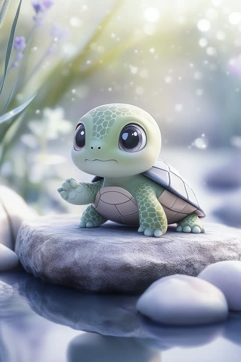

「石橋を叩きすぎる亀」タイプの五行は「土」の気質、ラッキーカラーは黄土色。
「まあ大丈夫でしょ」が世界で一番信用できない言葉、というくらい確認を怠らない人です。締め切りは破るものではなく守るもの、約束は忘れるものではなく果たすもの。そんなあなたの周りには「あの人に任せれば絶対大丈夫」という静かな信頼が積もっています。流行の新しさより使い込んだ定番を選ぶのは、臆病だからではなく、本当に大事なものを知っているから。昨日より一歩進んだ今日を重ねる生き方こそ、あなたの最大の財産です。占いの視点では、あなたは五行(木・火・土・金・水)でいう「土」の気質を持つタイプ。どっしり構えて周りを支える、大地そのものの属性です。ラッキーカラーは黄土色。【意識するといいこと】たまには石橋を叩かずに渡ってみると、橋の向こうに思わぬ景色が待っているかもしれません。
恋の駆け引きやサプライズより、「いつも通り」を一緒に積み重ねられることが最高の愛情表現だと知っている人です。毎日の「おはよう」が同じ時間に届く——その安心感こそ、あなたの誠実さの形。一度好きになったら脇目もふらない一途さは折り紙付きですが、「好き」を口にするのはどうにも照れくさく、行動で示す派です。恋愛運の面では、「土」のエネルギーが、時間をかけた分だけ固くなる絆を暗示しています。開運アクションは、公園など土や緑に近い場所でふたりの時間を過ごすこと。【意識するといいこと】伝わっているはずの気持ちも、年に数回は言葉に。あなたの「好き」は、相手にとって何よりのお守りになります。
あなたに任された仕事は、ダイヤ通りに、静かに、確実に届きます。手順と締め切りを守ることに安心を感じ、一度覚えた仕事の再現精度はチームでも群を抜くレベル。急な路線変更にはやや弱いものの、「あの人がやると言ったら、もう終わっている」という信頼は、どんな肩書きより強い武器です。仕事運の面では、「土」のエネルギーが、日々の積み重ねを確かな評価へ変えていく暗示。開運アクションは、デスク周りを整理整頓すること。【意識するといいこと】「前例がない」を理由に見送った提案の中に、次のダイヤ改正のヒントが眠っているかもしれません。
経理・財務、品質管理、法務・コンプライアンス、インフラエンジニアなど、正確さと継続力がそのまま成果になる仕事に向いています。「ミスがないこと」が価値になる分野では、あなたの確認癖は武器そのもの。長く勤めるほど信頼が複利で積み上がるタイプです。
伸びしろは「完成度8割で一度出してみる」練習です。慎重さは財産ですが、確認を重ねるほど着手と提出が遅れ、せっかくの正確さが「遅い」という印象に化けてしまうことがあります。まず粗い版を出して周りの反応を材料にする、という進め方を月に一度でも試すと、あなたの緻密さがスピードと両立し始めます。また、新しいやり方に出会ったときは「全面採用か拒否か」ではなく「一部だけ試験導入」という第三の選択肢を持つと、変化への強さが着実に育ちます。
この診断では、性格・恋愛・仕事の3ブロックをそれぞれ独立して判定しています。3つとも同じISTJになるとは限りません——あなたの本当のタイプを、無料の3分診断で確かめてみませんか?